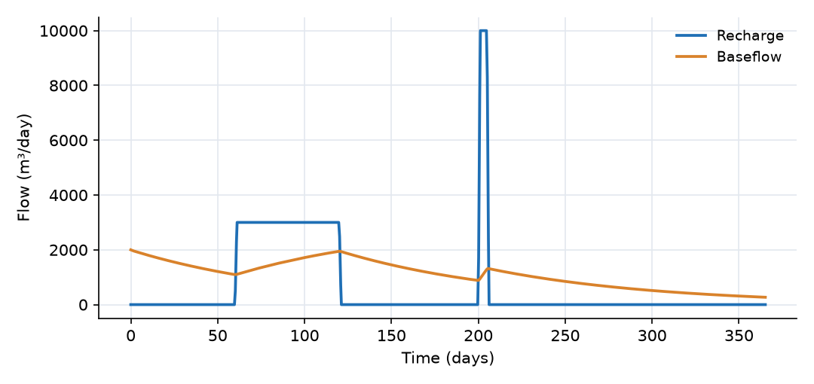
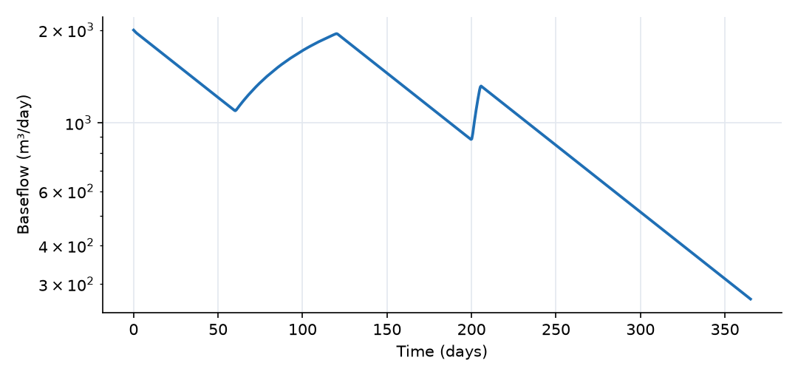
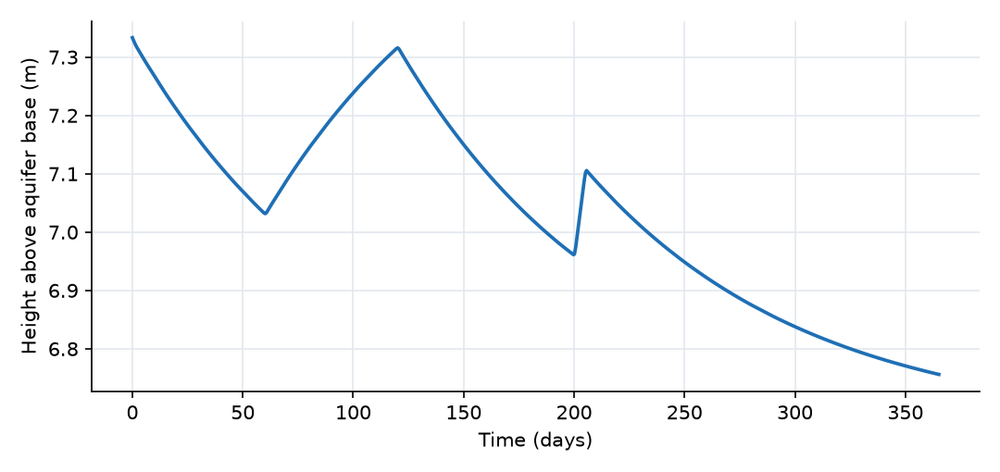

What this model represents
Between storms, streams are fed by groundwater. Hydrologists have long observed that this baseflow recedes exponentially: on a log plot, the dry-weather streamflow falls along a straight line. The simplest model that reproduces this is the linear reservoir, a store whose outflow is proportional to its content. It is the baseflow component of most conceptual rainfall-runoff models (HBV, GR4J, Sacramento, the baseflow routine in HEC-HMS), and its single parameter, the recession constant, can be read directly from a streamflow record.
This model is a 1 km² aquifer draining to a stream through a linear reservoir connector, driven by one year of recharge: 60 dry days, a two-month recharge season, a long dry period, a short intense recharge pulse in summer and a dry autumn.
How it works
Aquifer. The groundwater cell holds a water volume V. Its total volume is V_tot = area × thickness = 10⁷ m³, and its moisture content is θ = V/V_tot. The balance is
dV/dt = R(t) − Q
where R is the recharge from recharge.csv (the cell's inflow time series) and Q the baseflow.
Baseflow. The Linear_baseflow link computes
Q = k · max(θ − θ_min, 0) · V_tot
with k = 0.01 1/day and θ_min = 0.20. The quantity S_a = (θ − θ_min)·V_tot is the active storage: water above the threshold that can drain to the stream. Water below θ_min (2 million m³ here) represents storage that does not drain to this stream, for example water held in dead-end pores or below the stream bed. So Q = k·S_a and
dS_a/dt = R − k·S_a
Two analytical solutions follow.
- Recession (R = 0): S_a(t) = S_a(0)·e^(−kt) and Q(t) = Q(0)·e^(−kt). The time constant 1/k = 100 days is the mean residence time of the active water, and the half-life is ln 2/k = 69 days.
- Constant recharge R: Q(t) = R + (Q(0) − R)·e^(−kt). Baseflow approaches the recharge rate, but only over several time constants.
The link does not depend on the stream stage, the aquifer head or the hydraulic conductivity. Only k and θ_min matter. The head is reported for information: with specific storage S_s = porosity/thickness = 0.03 1/m, the cell's head expression (thickness + bottom elevation + (θ − porosity)/S_s) reduces to θ·thickness/porosity, the height of a free water table above the aquifer base.
What to look for in the results
- Analytical check. Baseflow starts at k·S_a = 0.01 × 200,000 = 2000 m³/day. With no recharge for 60 days the analytical value at day 60 is 2000·e^(−0.6) = 1097.6 m³/day. The model gives 1095.5 m³/day (0.2% lower, from the implicit time stepping).
- Slow rise. During 60 days of recharge at 3000 m³/day, baseflow rises only from 1096 to 1947 m³/day. With a 100-day time constant it would take several hundred days to reach the recharge rate.
- Damping of a pulse. The 5-day recharge pulse of 10,000 m³/day (50 mm in total) raises baseflow from 886 to only 1312 m³/day. The rest of the pulse is stored and released over the following months.
- Straight-line recessions. On the log plot every recession period has the same slope. This is how k is estimated from a real streamflow record: fit the slope of the recession segments.
- Water balance. Initial storage 2,200,000 m³ plus recharge 230,000 m³ minus final storage 2,026,900 m³ gives 403,100 m³, equal to the 403,100 m³ collected in the stream.
Assumptions and limitations
- The aquifer is a single lumped store, so all recessions have the same time constant. Real recessions often steepen at high flow and flatten at low flow; that needs a nonlinear reservoir or several reservoirs in parallel.
- Flow is one way. The stream cannot lose water to the aquifer, and stream stage does not affect baseflow. For head-driven exchange in both directions, use the
groundwater_to_streamconnector instead (not both for the same pathway). - Recharge is prescribed. In a full model it would come from a soil column above the aquifer.
- θ_min must not exceed the porosity of the aquifer. Water below θ_min never leaves through this link.
Model diagram
Hover a block or link to see its name and type. Arrows show the positive flow direction.
Components
Click a component to see every property set in the model file, with units and meaning.
Blocks 2
Storage compartments: each holds water (and dissolved or particulate mass) and has a state that evolves in time.
AquiferGroundwater cell · groundwaterA groundwater cell 1 km² in plan and 10 m thick, porosity 0.3. It starts at a moisture content of 0.22 (2.2 million m³). Below a moisture content of 0.20 water is held as inactive storage and cannot drain to the stream, so the active storage starts at 200,000 m³ (200 mm). Recharge enters through its inflow time series.
Groundwater cell: Groundwater cell
| Property | Value | Unit | Meaning |
|---|---|---|---|
| Cell area | 1000000 | m2 | |
| Cell Depth | 10 | m | |
| Bottom Elevation | 0 | m | Elevation of the bottom of the groundwater cell, used to determine hydraulic gradients and head. |
| Porosity | 0.3 | The fraction of the total volume of the subsurface that is occupied by voids or pores, representing storage capacity. | |
| Specific Storage | 0.03 | 1/m | Volume of water released per unit volume of aquifer per unit change in head. Reflects aquifer compressibility. |
| Initial Moisture Content | 0.22 | Computed as Storage/(depth*area) | |
| Hydraulic Conductivity | 1 | m/day | Rate at which water can move through pore spaces or fractures in the subsurface. Influences groundwater flow velocity. |
| Inflow time series | recharge.csv | m^3/day | Time series representing external water input to the groundwater cell, such as recharge from precipitation or surface water. |
Streamfixed_headFixed-head block standing for the receiving stream. Its storage starts at zero and accumulates all baseflow, so it is a running total.
fixed_head: Fixed-head boundary
| Property | Value | Unit | Meaning |
|---|---|---|---|
| Head | 0 | m | |
| Initial Storage | 0 | m3 |
Links 1
Connections that move water (and the mass it carries) between blocks.
BaseflowLinear_baseflow · groundwaterLinear-reservoir connector, Q = k × active storage, with recession rate k = 0.01 1/day (a 100-day time constant). Flow is one way: the stream never feeds the aquifer.
Linear_baseflow: Discharge is recession_rate times the groundwater storage above min_moisture_content: Q = k max(moisture_content - min_moisture_content, 0) volume. This is an alternative to groundwater_to_stream, not an additional parallel outlet. Create only one of those links between a groundwater cell and a receiving stream. The threshold is an absolute volumetric moisture content and should not exceed the source groundwater porosity.
| Property | Value | Unit | Meaning |
|---|---|---|---|
| First-order recession rate | 0.01 | 1/day | Inverse of the linear-reservoir storage time constant. With no recharge, active storage and baseflow recede exponentially with e-folding time 1/recession_rate. |
| Inactive-storage moisture-content threshold | 0.2 | Absolute volumetric moisture content below which this connector produces no baseflow. It should not exceed the porosity of the source groundwater cell. |
Input files
recharge.csv | Recharge to the aquifer (m³/day) versus time (days). Two columns, no header, linearly interpolated. 3000 m³/day (3 mm/day) from day 60 to day 120, and 10,000 m³/day (10 mm/day) from day 200 to day 205; zero otherwise. Total 230,000 m³ (230 mm). |
Simulation settings
| Start time | 0 |
| End time | 365 |
| Initial time step | 0.01 |
| Write interval (steps) | 10 |
Results
Produced by running the downloaded model unchanged.


